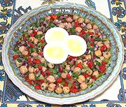

|
Chickpea SaladTurkey - Nohut Piyazi | ||||
| Serves: Effort: Sched: DoAhead: |
4 salad ** 40 min Best |
An attractive, delicious and refreshing salad that's easy to make those times when you want a little more substance than just greens. | |||
|
1 15 5 4 4 1/3 ------ 1/4 2 1/2 1/2 1/3 ------ 2 |
oz oz oz oz c --- c t c t t --- |
can Chickpeas Onion, red Bell Pepper, red Bell Pepper, grn Parsley, flat -- Dressing Lemon Juice Wine Vinegar, white Olive Oil ExtV Salt Sugar (opt) -- Garnish Eggs Sliced |
Prep - (15 min + chill)
|